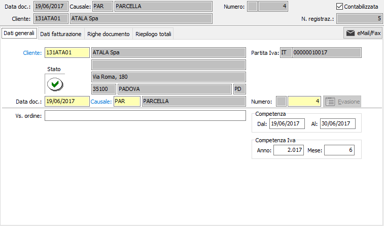
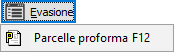

Dati generali
All’inizio di una nuova parcella il cursore è posizionato sul campo cliente della linguetta dati generali, da cui inizia l’inserimento.

CLIENTE: codice alfanumerico di 8 caratteri, presente in anagrafica clienti, che individua il cliente da trattare. Sul campo, la cui compilazione è obbligatoria, sono attive le funzioni di ricerca (F9) ed accesso rapido alla tabella (CTRL+W) per eventuali nuovi inserimenti o variazioni. Il codice inserito in questo campo è quello del cliente a cui è intestata la parcella. Dopo aver selezionato il codice del cliente vengono visualizzati, senza possibilità di modifica, la ragione sociale e l’indirizzo dello stesso. Se presente nella linguetta preferenze dell’anagrafica cliente, viene anche compilato automaticamente il successivo campo causale parcella con la causale esistente in anagrafica.
DATA DOCUMENTO: campo data in cui viene visualizzata la data di sistema, modificabile dall’utente.
CAUSALE: codice alfanumerico di 3 caratteri presente nella tabella Causali Parcelle che definisce la tipologia di parcella in esame. Se, presente, viene visualizzata la causale esistente nelle preferenze dell’anagrafica del cliente in esame, modificabile dall’utente. Sul campo sono attive le funzioni di ricerca (F9) ed accesso rapido (CTRL+W) sulla tabella stessa.
NUMERO: campo numerico che contiene il numero progressivo della parcella. Viene compilato automaticamente dal programma in base alla serie contenuta dalla causale. E’ modificabile dall’utente. 
VOSTRO ORDINE: campo alfanumerico per l’eventuale descrizione degli estremi dell’ordine del cliente.
PERIODO COMPETENZA: Indicare l'eventuale periodo di competenza della parcella.
CODICE PROGETTO: Codice alfanumerico di 15 caratteri che definisce il progetto di riferimento. Sul campo sono attive le funzioni di ricerca (F9) ed accesso diretto alla tabella (CTRL+W). Il campo è presente solo se attiva la gestione progetti.
FATT. PROGETTO: combo box che stabilisce il tipo di parcella in relazione al progetto in uso. Valori ammessi: In conto progetto, A saldo progetto. Se la parcella è a saldo chiude il relativo progetto. Questa opzione è presente solo se gestito il progetto sulla testa del documento.
COMMESSA PUBBLICA: Codice della commessa pubblica, sul campo sono attive le funzioni di ricerca (F9) ed accesso diretto alla tabella (CTRL+W). Il campo è presente solo se attiva la gestione della normativa antimafia e se gestita per il tipo documento.